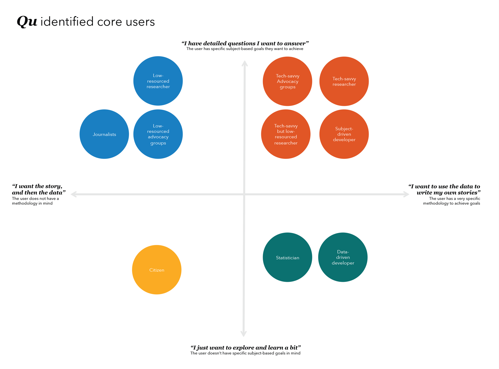
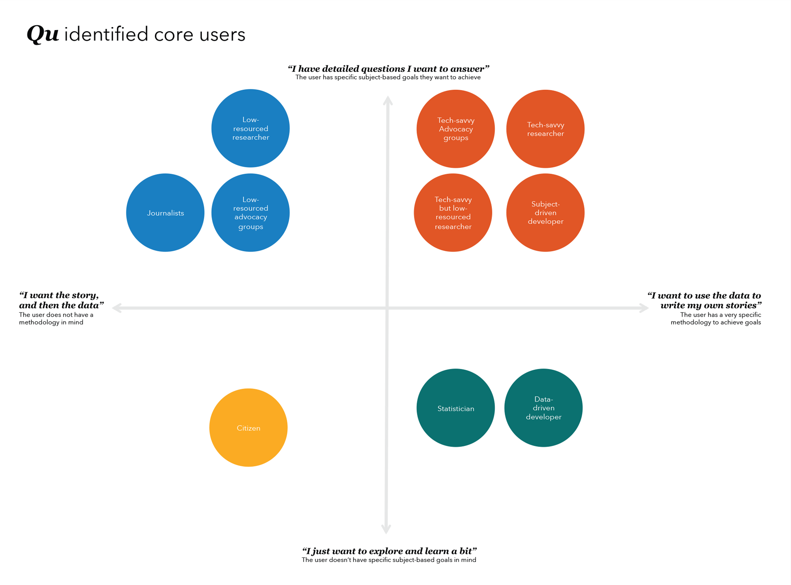

Identifying and prioritizing audiences
I observed people in data-driven roles work using their current workflow to identify behaviors and common themes.
 

I identified 4 major workflow factors:
- Level of technical detail. People with really specific research methodologies, like a statistician, vs. people who don't deal with numbers at all.
- Level of subject-matter detail. People working on specific industry things, like a policy analyst, vs. people who have no previous knowledge of the mortgage industry.
The team decided to build for current HMDA experts (orange!), who have specific research methods and also work on a specific aspect of the industry.
However, we also wanted to help out advocacy organizations, journalists, bloggers, and any other people who could benefit from fact-checking or backing up their work with data (blue!).